Http 001协议原理
前言
如果说 TCP/IP 协议是互联网通信的根基，那么 HTTP 就是其中当之无愧的王者，小到日常生活中的游戏，新闻，大到双十一秒杀等都能看到它的身影，据 NetCraft 统计，目前全球至少有 16 亿个网站、2 亿多个独立域名，而这个庞大网络世界的底层运转机制就是 HTTP，可以毫不夸张的说，无 HTTP 不通信！
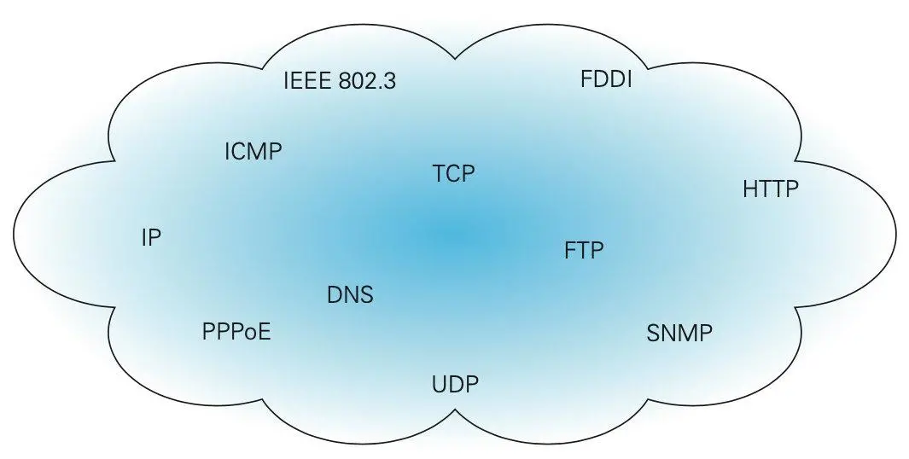
HTTP 应用如此广泛，我们确实必要好好学习下它，不仅有助于我们理解和解释工作中的强制刷新，防盗链等现象和原理，还让我们在设计开源中间件时会有所启发，比如在设计 MQ, Dubbo 这些组件时，第一要务就是要设计协议，在其中你或多或少能看到 HTTP 协议的影子，学习了 HTTP 能让你在设计中间件等组件协议时，提供很好的思路
本文将会全面剖析 HTTP 的设计理念，助你彻底掌握 HTTP，相信看完以下问题你会手到擒来！
- 什么是 HTTP，它有什么特点，为什么说 HTTP 是万能的
- 为什么说反爬是个伪命题
- 简要介绍一下 HTTP 0.9, 1.1, 2.0, 3.0 的特点
- 曾经在我司有一位同事在大群里抛了一个问题：在浏览器的地址栏输入图片 url，想预览一下图片，结果却变成了下载图片，你能替他解释一下其中的原因吗
- DNS 协议了解多少，什么是 DNS 负载均衡
- HTTP 1.1 唯一一个要求请求头必传的字段是哪个，它有什么作用
- no-cache 真的是不缓存的意思？你对 HTTP 的缓存了解多少
- 为什么刷新了浏览器器却抓不到请求，而强制刷新却可以抓到，强制刷新到底做了什么事
- 301 和 302 的区别是啥
- 各种协议与 HTTP 的关系
- 老生常谈很多人的误解：GET 和 POST 的区别是啥
本文目录
本文将会从以下几点来展开阐述 HTTP
- 什么是 HTTP
- 与 HTTP 相关的各种协议
- HTTP 内容协商
- HTTP 缓存
- HTTP 连接与HTTP 2的改进
什么是 HTTP
HTTP 全称 HyperText Transfer Protocol「超文本传输协议」,拆成三个部分来看，即「超文本」,「传输」,「协议」
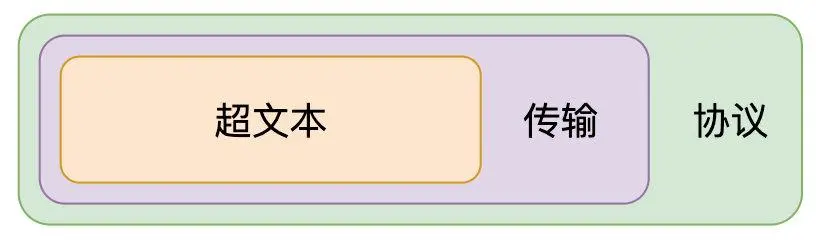
超文本：即「超越了普通文本的文本」，即音视频，图片，文件的混合体，大家常见的网页很多就内嵌了 img, video 这些标签解析展现而成的图片，视频等，除了这些超文本内容外，最关键的是超文本中含有超链接，超链接意味着网页等文件内容的超文本上可以点击链接到其他页面上，互联网就是通过这样的超链接构成的。
传输: 传输意味着至少有两个参与者，比如 A，B，这意味着 HTTP 协议是个双向协议，一般是将「超文本」按照约定的协议以二进制数据包的形式从 A 传到 B 或 B 传到 A， A <===> B，我们把发起请求的叫请求方，接到请求后返回数据的那一方称为应答方，但需要注意的是传输也不限于两个参与者，允许中间有中转或者接力，只要参与者间遵循约定的协议即可传输。
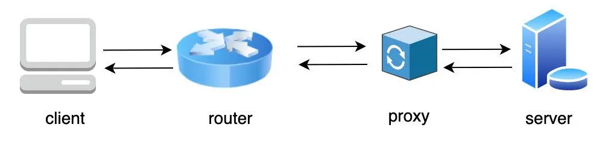
如图示：传输可以有多个参与者，只要遵循相应的协议即可
协议：HTTP 是一个协议，啥是协议？在日常生活中协议并不少见，比如我们租房时签订的租房协议，入职后和企业签订的劳动合同协议，「协」意味着至少有两人参与，「议」意味着双方要就某项条款达成一致，比如租房协议规定月付 xx 元，劳动合同协议规定月工资 xx 元，协议即对通信双方的约束，双方按照约定传输数据才能进行明白对方的意思，否则便是鸡同鸭讲。
经过以上解释，我们可以给 HTTP 下一个比较准确的定义了:
HTTP 是一个在计算机世界里专门在两点之间传输文字、图片、音频、视频等超文本数据的约定和规范。
与 HTTP 相关的各种协议
HTTP 虽然在当今互联网通信中占据统计地位，但要让它生效还必须依赖其他协议或规范的支持
1. URI 和 URL
首先既然我们要在两点之间传输超文本，那这个超文本该怎么表示？超文本即资源，互联网上资源这么多，如何唯一标记互联网上的资源。
使用 URI（Uniform Resource Identifier） 即统一资源标识符就可以唯一定位互联网上的资源。URI 大家比较少听过，大家更熟悉的可能是 URL（Uniform Resource Locator），即统一资源定位符，URL 其实是 URI 的一种子集，区别就是URI 定义资源，而 URL 不单定义这个资源，还定义了如何找到这个资源。
URL 主要由四个部分组成：协议、主机、端口、路径
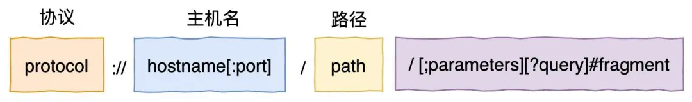
-
协议：即通信双方指定的传输协议，应用最广的当然是本文要介绍的 http 协议，除此之外还有 ftp, mailto，file 等协议。
-
主机名：存放资源的服务器主机名或 IP 地址，当前有时候服务器由于安全原因还需要对用户进行认证，需要提供用户名和密码，此时需要在 hostname前加 username:password。
-
端口：整数，可选，省略时使用方案的默认端口，各种传输协议都有默认的端口，如 HTTP 默认用的 80 端口，HTTPS 用的 443 端口，传输层协议正是利用这些端口号识别本机中正在进行通信的应用程序，并准确地将数据传输。
-
路径：即资源在主机上的存放路径，一般表示主机的目录或文件地址
-
parameter：用于指定特殊参数的可选项。
-
query：查询字符串，可选，用于给动态网页或接口传递参数，可有多个参数，用“&”符号隔开，每个参数的名和值用“=”符号隔开。
-
fragment：浏览器专用，用于指定网络资源中的片断，指定后打开网页可直接定位到 fragment 对应的位置。
例子如下：

2. TCP/IP 协议
在上述 URL 地址中，如果你指定了「www.example.com 」 这样的主机名，最终会被 DNS 解析成 IP 地址然后才开始通信，为啥主机名最终要被解析成 IP 地址才能通信呢，因为 HTTP 协议使用的是 TCP/IP 协议栈，协议栈就是这样规定的，一起来看看 TCP/IP 协议栈各层的功能。
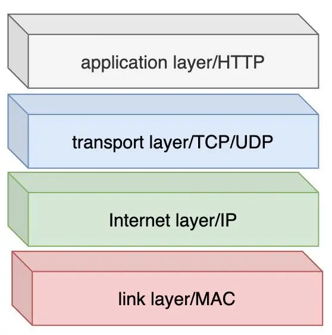 TCP/IP协议栈
TCP/IP 协议栈总共有四层
-
link layer: 链接层，负责在以太网，WIFI 这样的底层网络上发送原始数据包，工作在网卡这一层，使用 MAC 地址来标记网络上的设备，所以也叫 MAC 层
-
Internet layer: 网络层，IP 协议即处于这一层，提供路由和寻址的功能，使两终端系统能够互连且决定最佳路径，並具有一定的拥塞控制和流量控制的能力。相当于传送邮件时需要地址一般重要
-
transport layer: 传输层，该层的协议为应用进程提供端到端的通信服务，这层主要有 TCP，UDP 两个协议，TCP 提供面向连接的数据流支持、可靠性、流量控制、多路复用等服务，UDP不提供复杂的控制机制，利用 IP 提供面向无连接的简单消息传输
-
application layer: 即应用层，前面三层已经为网络通信打下了坚实的基础，这层可发挥的空间就大很多了，应用层协议可以想象为不同的服务，每个应用层协议都是为了解决某一类应用问题而生的，每一个服务需要用不同的协议，规定应用进程在通信时所遵循的协议。
我们可以把前面三层认为是高速公路及其配套的基础设施，至于要传什么货物，高速公路是否要关闭等则由应用层决定。
利用 TCP/IP 协议族进行网络通信时，会通过分层顺序与对方进行通信。每个分层中，都会对所发送的数据附加一个首部，在这个首部中包含了该层必要的信息，如发送的目标地址以及协议相关信息。
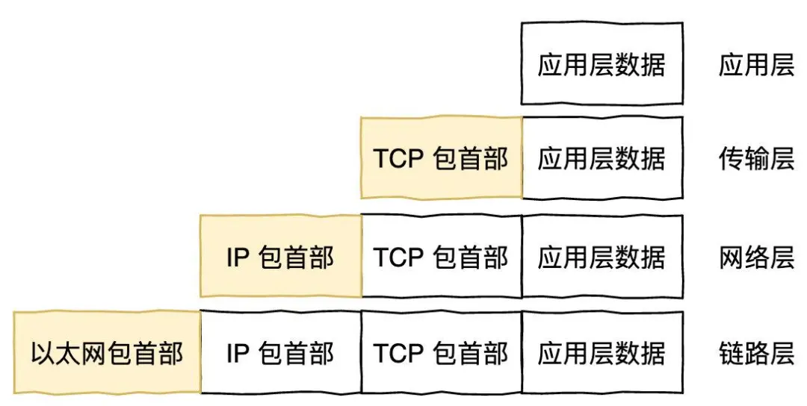
接收方收到数据后，同样的，每一层也会解析其首部字段，直到应用层收到相应的数据。
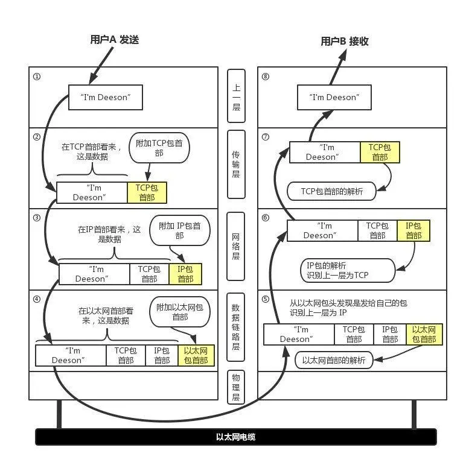 图片来自文末参考链接
通过这样分层的方式，每个层各司其职，只要管好自己的工作即可，可扩展性很好，比如对于 HTTP 来说，它底层可以用 TCP，也可以用 UDP 来传输，哪天如果再出现了更牛逼的协议，也可以替换之，不影响上下层，这就是计算机中比较有名的分层理论：没有什么是分层解决不了的，如果有那就再分一层。
IP 包的首部中定义了32 位的源 IP 地址和目的 IP 地址，如下图所示址
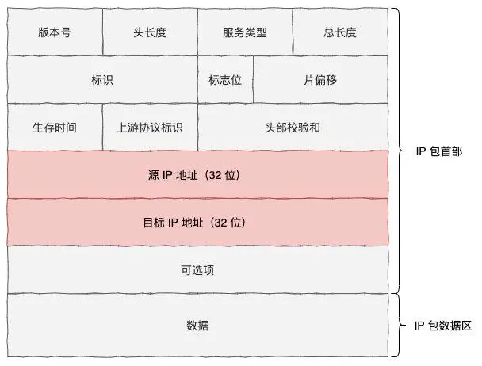
所以应用层在请求传输数据时必须事先要知道对方的 IP 地址，然后才能开始传输。
2. DNS 协议
由上一节可知请求时需要事先知道对方的 IP 地址，但 IP 地址是由「161.117.232.65」这样的数字组成的，正常人根本记不住，想想看，如果我要上个百度，还要先知道它的 IP 地址，那岂不是要疯掉，那怎么办，联系生活场景，想想看，如果我们要打某人电话，记不住他的电话号码，是不是要先到电话本找某个人的名字，然后再打，电话本起的作用就是把姓名翻译成电话号码。
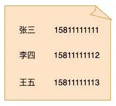
同样的，正常人只会记住 baidu.com 这样的网址，那就需要有类似电话本这样的翻译器把网址转成 IP 地址，DNS（域名服务器）就是干这个事的
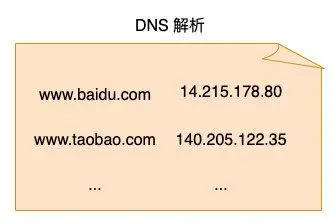
上面只是 DNS 的简化版本，实际上 DNS 解析无法一步到位，比较复杂，要理解 DNS 的工作机制，首先我们要看懂域名的层级结构，类似 www.baidu.com 这样的网址也叫域名，是一个有层次的结构, 最右边的被称为顶级域名，然后是二级域名，层级关系向左降低，最左边的是主机名，通常用来表示主机的用途，比如 「www」 表示提供万维网服务

当然这也不是绝对的，起名的关键只是方便我们记忆而已。
域名有层次之分，DNS 也是有层次之分，DNS 核心系统是一个三层的树状，分布式结构，基本对应域名结构。
- 根域名服务器（Root DNS Server）: 返回「com」,「cn」,「net」等顶级域名服务器的 IP 地址，
- 顶级域名服务器（Top-level DNS Server）：管理各自域名下的权威域名服务器，比如 com 顶级域名服务器可以返回 apple.com 域名服务器的 IP 地址；
- 权威域名服务器（Authoritative DNS Server）：管理自己域名下主机的 IP 地址，比如 apple.com 权威域名服务器可以返回 www.apple.com 的 IP 地址。
 DNS 核心系统层级结构
DNS 核心系统层级结构
根域名服务器是关键，必须是众所周知的，找到了它，下面的各级域名服务器才能找到，否则域名解析就无从谈起了。既然知道了 DNS 的层次之分，那么不难猜出请求 www.apple.com 的 DNS 解析如下
- 首先访问根域名服务器，获取「com」顶级域名服务器的地址
- 请求「com」顶级域名服务器，返回「apple.com」域名服务器的地址
- 然后返回「apple.com」域名服务器，返回 www.apple.com 的地址
以上三层解析我们称为 DNS 核心解析系统，那么大家想想，全世界的 PC，app 等设备多如牛毛，如果每发一次请求都要按上面的 DNS 解析来获取 IP，那估计 DNS 解析系统就要炸了，如何缓解这种压力呢，答案是用缓存，事实上很多大公司，或网络运营商都会自建自己的 DNS 服务器，作为用户查询的代理，代替用户请求核心 DNS 系统，这样如果查到的话可以缓存查询记录，再次收到请求的号如果有缓存结果或者缓存未过期，则直接返回原来的缓存结果，大家可能听过 Google 的 8.8.8.8 DNS 解析服务器，这种就是 Google 自建的，我们一般称这种自建的为「非权威域名服务器」。
配置 DNS Server
除了非权威域名服务器，还有浏览器缓存，操作系统缓存（大家熟知的 /etc/hosts 就是操作系统 DSN 缓存的一种）
这样的话如果请求 www.example.com，dns 的完整解析流程如下:
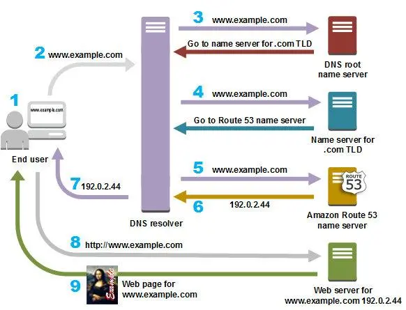
1、 浏览器中输入 www.example.com 后，会先查看 浏览器的 DNS 缓存是否过期，未过期直接取缓存的，已过期会继续请求操作系统的缓存（/etc/hosts 文件等），还未找到，进入步骤 2
2、 请求本地地址配置的 DNS resolver（非权威域名服务器），一般由用户的 Internet 服务提供商 (ISP) 进行管理，例如有线 Internet 服务提供商、DSL 宽带提供商或公司网，MAC 的同学可以打开网络配置中的 DNS Servers 来看下默认 ISP 提供的域名服务器（如果想用其他的非权威域名服务器，填入即可，这样就会覆盖 ISP 提供的默认地址）
3、 DNS resolver 将 www.example.com 的请求转发到 DNS 根名称服务器, 根服务器返回「.com」顶级域名服务器地址
4、 DNS resolver 再次转发 www.example.com 的请求，这次转发到步骤三获取到的 .com 域的一个 TLD 名称服务器。.com 域的名称服务器使用与 example.com 域相关的四个 Amazon Route 53 名称服务器的名称来响应该请求。
5、Amazon Route 53 名称服务器在 example.com 托管区域中查找 www.example.com 记录，获得相关值，例如，Web 服务器的 IP 地址 (192.0.2.44)，并将 IP 地址返回至 DNS 解析程序。
6、DNS resolver 最终获得用户需要的 IP 地址。解析程序将此值返回至 Web 浏览器。DNS 解析程序还会将 example.com 的 IP 地址缓存 (存储) 您指定的时长，以便它能够在下次有人浏览 example.com 时更快地作出响应。
我们可以用 dig 工具来验证一下上面的请求流程
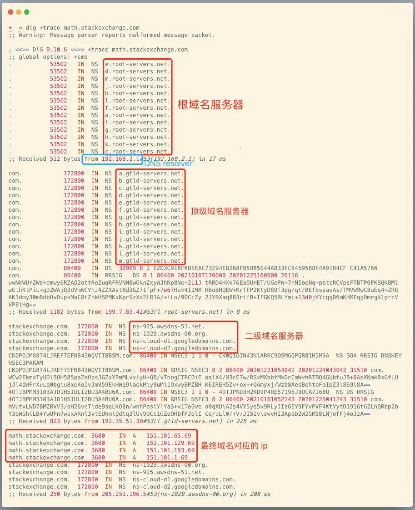
可以看到请求流程确实与我们的流程图一致！另外我们注意到 ip 地址返回了四个，这样的话 client 可以随机选择其中一个请求，这就是我们常说的 DNS 负载均衡，可有效缓存 server 压力。
HTTP 报文格式
接下来我们再介绍下 HTTP 报文格式，通信双方要能正常通信，就必须遵循协议才能理解对方的信息，协议规定了 HTTP 请求和响应报文的格式。
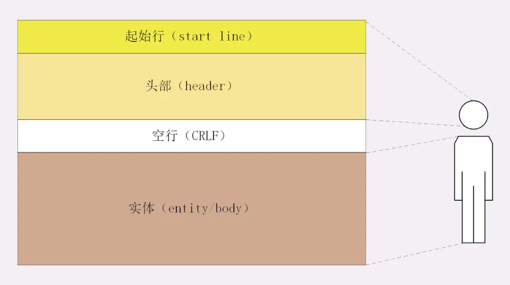
请求和响应报文都由「起始行」，「头部」，「空行」，「实体」 四个部分组成，只不过起始行稍有不同。
1.请求报文格式
先来看下请求报文的格式
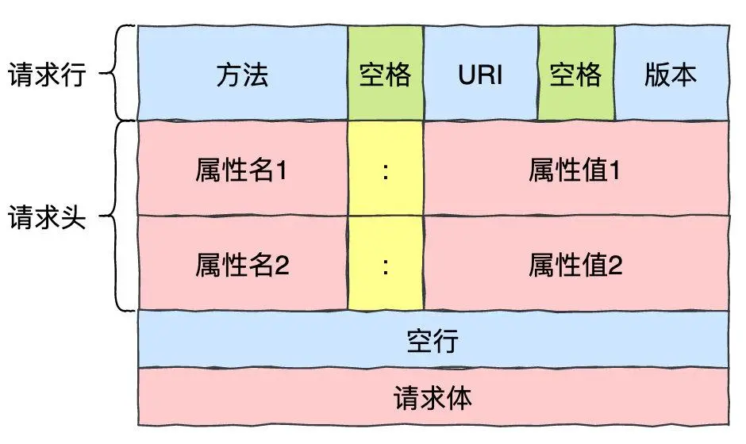
示例如下:
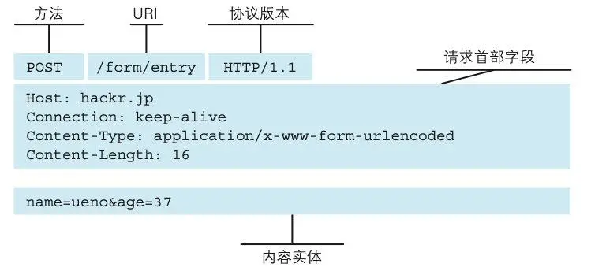
请求方法比较常见的有以下几类
1、 GET: 请求 URL 指定的资源，指定的资源经服务器端解析后返回响应内容，GET 方法具有幂等性，即无论请求多次，都只会返回资源，而不会额外创建或改变资源， GET 请求只传请求头，不传请求体。
2、 HEAD: 语义上与 GET 类似，但 HEAD 的响应只有请求头，没有请求体
3、 POST: 主要用来创建，修改，上传资源，不具有幂等性，一般将要请求的资源附在请求体上传输
4、 PUT: 修改资源，基本上不用，因为 POST 也具有修改的语义，所以基本上线上大多用 POST 来代替。
5、 OPTIONS: 列出可对资源实行的方法，这个方法很少见，但在跨域中会用到，也比较重要，后文结合 Cookie 谈到安全问题时我们会再提
协议版本指定了客户端当前支持的 HTTP 版本，HTTP 目前通用的有 1.1, 2.0 三个版本，如果请求方指定了 1.1，应答方收到之后也会使用 HTTP 1.1 协议进行回复。
2.响应报文格式
响应行的报文格式如下
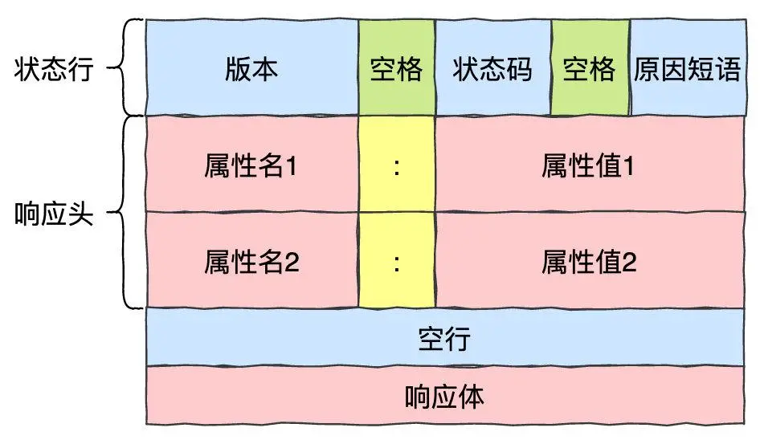
示例如下
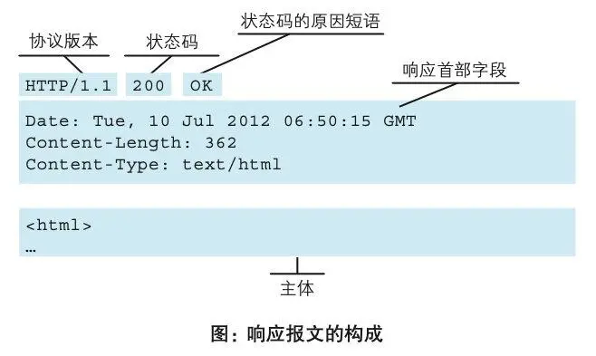
响应报文主要有如下五类状态码：
- 1××：提示信息，表示目前是协议处理的中间状态，还需要后续的操作；
- 2××：成功，报文已经收到并被正确处理；
- 3××：重定向，资源位置发生变动，需要客户端重新发送请求；
- 4××：客户端错误，请求报文有误，服务器无法处理；
- 5××：服务器错误，服务器在处理请求时内部发生了错误。
常用的状态码及其释义如下（更详细的可以参考文末参考链接）
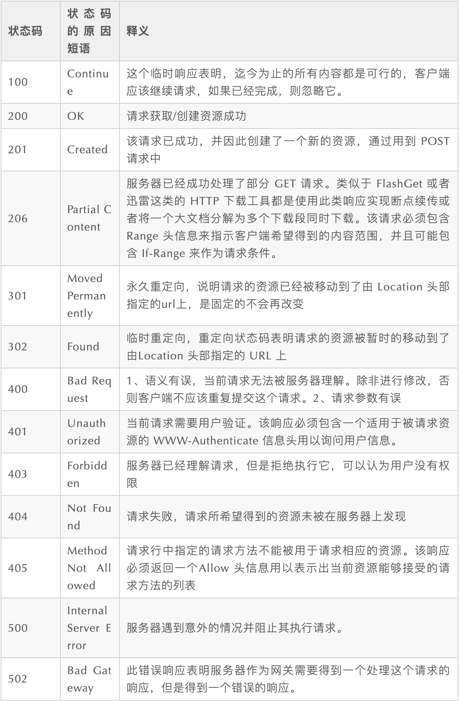
了解这些状态码，我们定位排查问题就能成竹在胸，比如看到 5xx，就知道是 server 的逻辑有问题，看到 400 就知道是客户端的请求参数有问题，另一端就不用傻傻去排查了。
3.请求和响应头
请求和响应头部报文的 header 格式基本都是一样的，都是 key-value 的形式，key 和 value 都是用 「: 」分隔，此外 HTTP 头字段非常灵活，除了使用标准的 Host，Connection 等头字段外，也可以任意添加自定义头，这就给 HTTP 协议带来了无限的扩展可能！
4.常用头字段
HTTP 协议规定了非常多的头字段，可以实现各种各样的功能，但基本上可以分为以下四类
- 通用字段：在请求头和响应头里都可以出现；
- 请求字段：仅能出现在请求头里，进一步说明请求信息或者额外的附加条件；
- 响应字段：仅能出现在响应头里，补充说明响应报文的信息；
- 实体字段：它实际上属于通用字段，但专门描述 body 的额外信息。
对 HTTP 报文的解析和处理其实本质上就是对头字段的处理，HTTP 的连接管理，缓存控制，内容协商等都是通过头字段来处理的，理解了头字段，基本上也就理解了 HTTP，所以理解头字段非常重要。接下来我们就来看看这些头部字段的具体含义
4.1 通用字段
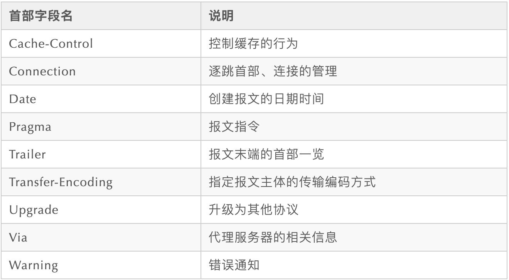
4.2 请求首部字段
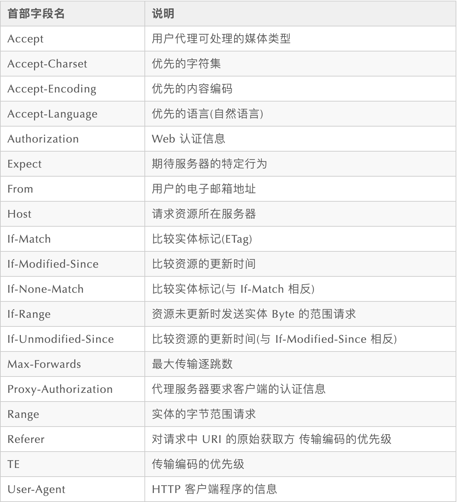
4.3 响应首部字段
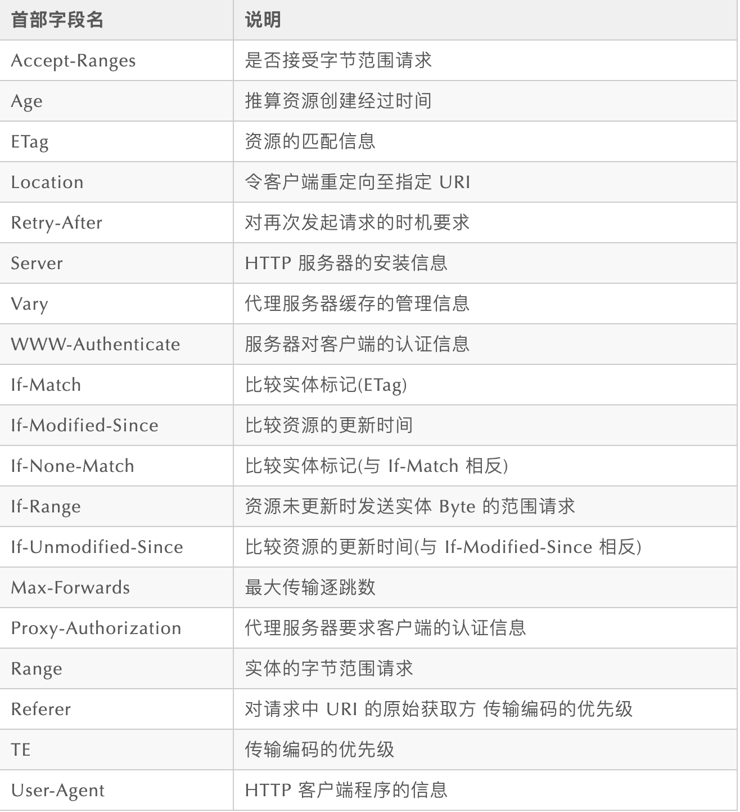
4.4 实体首部字段
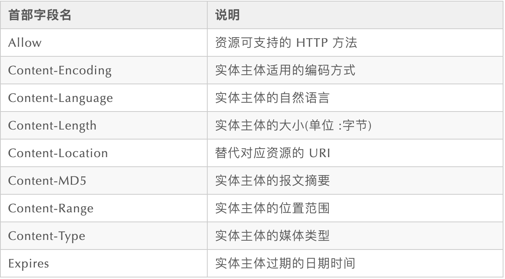
这么多字段该怎么记呢，死记硬背肯定不行，从功能上理解会更易懂，HTTP 主要为我们提供了如下功能:
一、内容协商
内容协商机制是指客户端和服务器端就响应的资源内容进行交涉，然后提供给客户端最为适合的资源。内容协商会以响应资源的语言、字符集、编码方式等作为判断的基准，举一个常见的例子，大家在 Chrome 上设置不同的语言，主页也就展示不同的内容
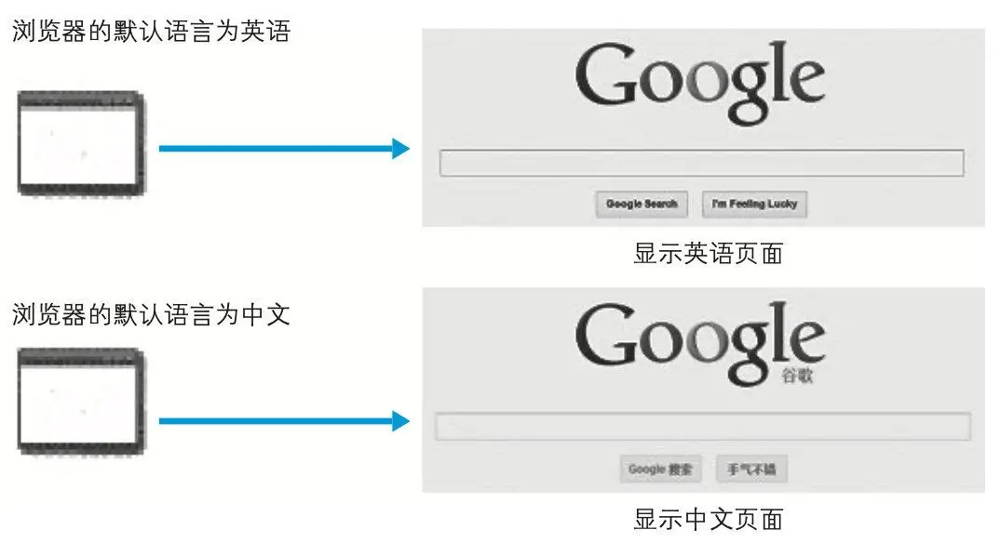 内容协商示例
请求报文的「Accept」，「Accept-Charset」,「Accept-Encoding」，「Accept-Language」,「Content-Language」,即为内容协商的判定标准。
举个例子

上图表示的含义如下
客户端：请给我类型为 text/*，语言为 en，编码类型最好为 br（如果没有 gzip 也可接受）的资源。
服务器：好的，我找到了编码类型为 br（Content-Encoding: br），内容为 en（Content-Language: en）的资源，它的 url 为 URLe（Content-Location: /URLe），你拿到后再去请求下就有了。
内容协议请求头和对应的响应头对应关系如下:
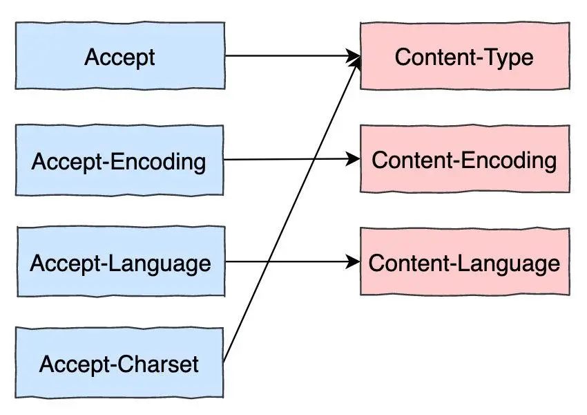
二、缓存管理
缓存管理也是 HTTP 协议非常重要的内容，这部分也是务必要掌握的。
对于资源来说，由于有些挺长时间内都不会更新，所以没必要每次请求都向 server 发起网络请求，如果第一次请求后能保存在本地，下次请求直接在本地取，那无疑会快得多，对服务器的压力也会减少。
涉及到缓存的请求头为 Cache-Control。这个缓存指令是单向的，也就是说请求中设置的指令，不一定包含在响应中，请求中如果没有传 Cache-Control， server 也可以返回 Cache-Control。
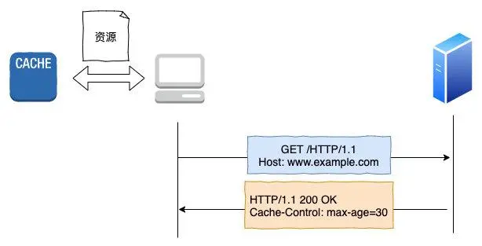
如图示：客户端发起请求后，服务器返回 Cache-Control：max-age=30，代表资源在客户端可以缓存 30 秒，30 秒内客户端的请求可以直接从缓存获取，超过 30 秒后需要向服务器发起网络请求。
max-age 是 HTTP 缓存控制最常用的属性，表示资源存储的最长时间，需要注意的是，时间的计算起点是响应报文的创建时刻（即 Date 字段，也就是离开服务器的时刻），超过后客户端需要重新发起请求。
除此之外，还有其它属性值如下:
-
no-cache: 这个是很容易造成误解的字段，它的含义并不是不允许缓存，而是可以缓存，但在使用之前必须要去服务器验证是否过期，是否有最新的版本；
-
no-store: 这才是真正的不允许缓存，比如秒杀页面这样变化非常频繁的页面就不适合缓存
no-cache
- must-revalidate：一旦资源过期（比如已经超过max-age），在成功向原始服务器验证之前，缓存不能用该资源响应后续请求。
三者的区别如下：
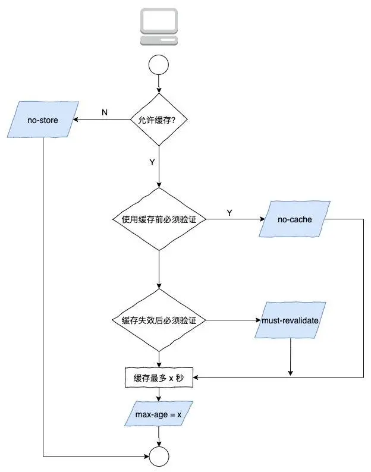
Cache-Control 只能刷新数据，但不能很好地利用缓存，又因为缓存会失效，使用前还必须要去服务器验证是否是最新版，存在一定的性能稳定，所以 HTTP 又引入了条件缓存。
条件请求以 If 开头，有「If-Match」，「If-Modified-Since」，「If-None-Match」,「If-Range」,「If-Unmodified-Since」五个头字段，我们最常用的是「if-Modified-Since」和「If-None-Match」这两个头字段，所以重点介绍一下。
- if-Modified-Since：指的是文件最后修改时间，服务器只在所请求的资源在给定的日期时间之后对内容进行过修改的情况下才会将资源返回，如果请求的资源从那时起未经修改，那么返回一个不带有消息主体的 304 响应，需要第一次请求提供「Last-modified」，第二次请求就可以在 「if-Modified-Since」首部带上此值了。
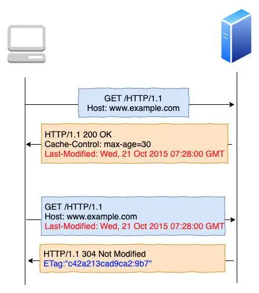
- If-None-Match：条件请求首部，对于 GET 和 HEAD 请求方法来说，当且仅当服务器上没有任何资源的 ETag 属性值与这个首部中列出的相匹配的时候，服务器端会才返回所请求的资源，响应码为 200，
注意到上图中有个 ETag 返回，它是实体标签（Entity Tag）的缩写，是资源的唯一标识，主要解决修改时间无法准确区分文件变化的问题，比如文件在一秒内修改了多次，由于修改时间是秒级的，用 if-Modified-Since 就会误认为资源没有变化，而每次文件修改了都会修改 ETag，也就是说 ETag 可以精确识别资源的变动, 所以如果对资源变化很敏感觉的话，应该用 If-None-Match。
注：ETag 有强，弱之分，强 ETag 要求资源在字节级别必须完全相符，弱 ETag 在值前有 「W/」标记，只要求资源在语义上没啥变化，比如加了几个空格等等。
需要注意的是不管是 if-Modified-Since 还是 If-None-Match，这两者只会在资源过期（即存活时间超 max-age）后才会触发，但如果在开发环境下，缓存可能会影响我们联调，我们希望每次请求都从 server 拿，而不是缓存里，该怎么办？这种情况下就要用到刷新或者强制刷新了。如果是刷新，请求头里会加上一个 Cache-Control: max-age=0，代表需要最新的资源，浏览器看到了后就不会使用本地资源，会向 server 请求，如果是强制刷新，请求头会加上Cache-Control: no-cache，也会向 server 发送请求，通常刷新和强制刷新效果一下。
三、实体首部
由于实体部分可以传文本，音视频，文件等，所以一般要指定实体类型，内容大小，编码类型，实体采用的语言（英文，法语）等，这样应答方才会理解其内容。
先来看最重要的 Content-Type，通常有以下几种数据类型
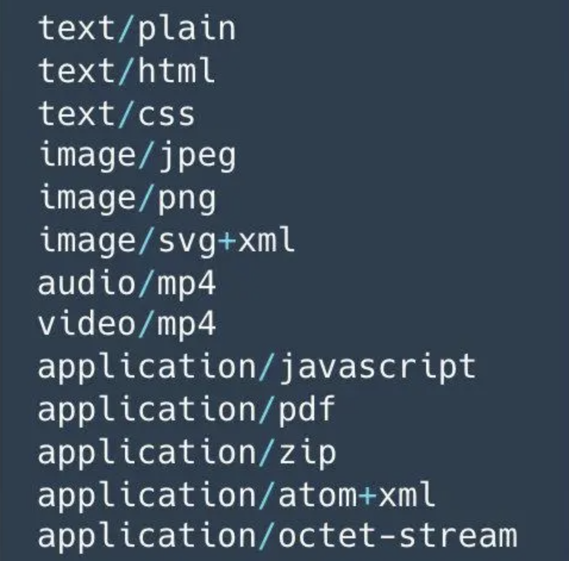
这些数据类型被称为 MIME 类型，指示资源所属类型，请求方如果要上传资源（一般是 POST 请求），可以在用 Content-Type 指定资源所属类型，如果请求方想要获取资源（GET 请求），可以用 Accept 请求头指定想要获取什么资源，这样 server 找到匹配的资源后就可以在 Content-Type 中指定返回的资源类型，浏览器等客户端看到后就可以据此解析处理了
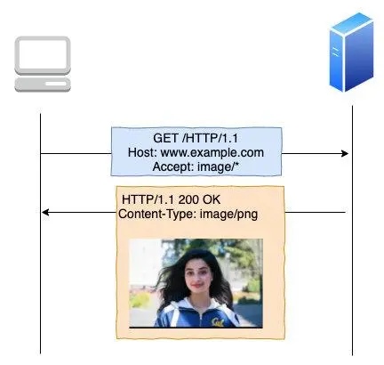
如图示：客户端使用 Accept: image/ 告诉服务器，我想请求 png，jpeg，svg 等属于 image 类型的资源，服务端返回图片的同时用 Content-Type: image/png 告诉客户端资源类型为 png。*
通过 Content-Type 指定资源的方式浏览器等客户端就可以据此作出相关解析处理了，再看下开头的问题，为啥请求图片本来希望是能直接在浏览器上展示的，实际上却直接下载了呢，抓包看下它的 Content-Type
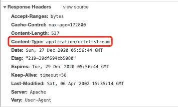
可以看到返回的 Content-Type 是 application/octet-stream，这个类型是应用程序文件的默认值，意思是未知的应用程序文件，浏览器一会不会自动执行或询问执行，会直接下载。那如果希望图片能自动展示在浏览器而非下载呢，server 指定一下 Content-Type 的具体类型如 image/png 这样的形式即可，浏览器识别到了具体类型就会自动解析展示出来。
其他请求方，应答方的实体首部对应关系在上文内容协商部分也给出了，再贴一下图：

四、连接管理
连接管理也是 HTTP 非常重要的功能，只不过因为用户无感知，所以被很多人忽略了，实际它是幕后英雄，对提升传输性能起了巨大的作用，也促进 HTTP 不断不断改版衍进的重要原因之一，我们可以从 HTTP 的各个版本来看下连接管理的功能改进。
首先我们知道双方要建立可靠连接要经过 TCP 的三次握手，然后才能开始传输 HTTP 的报文，报文传输之后要经过四次挥手断开连接
HTTP 0.9，1.0 时期，发送完 HTTP 报文后， 连接立马关闭，这种连接被称为短链接
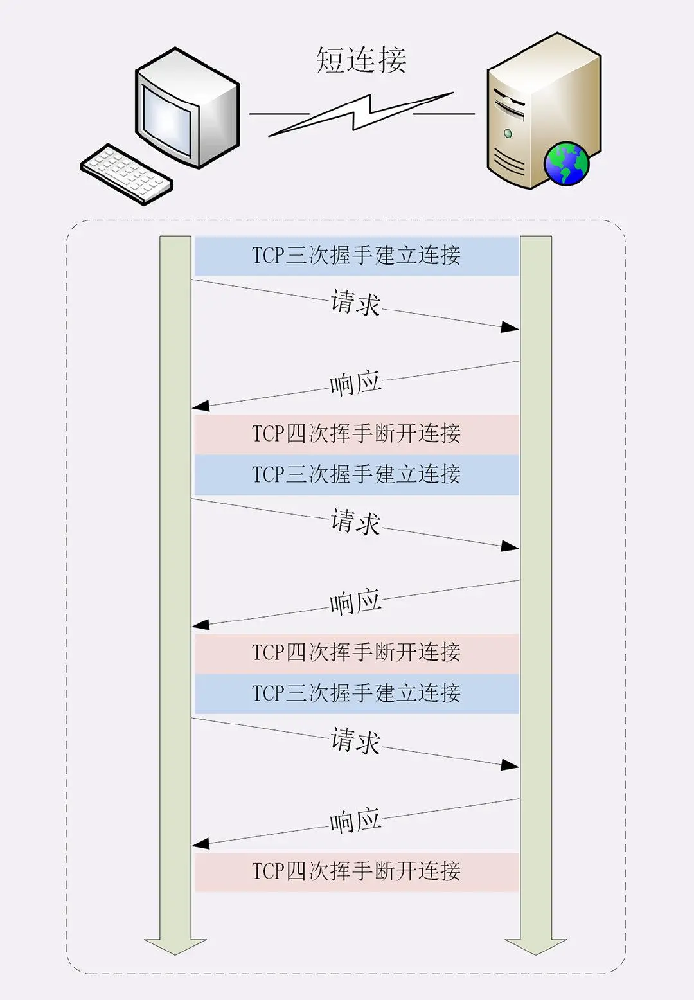
可以看到短链接效率非常低下，大量时间浪费在无意义的三次握手和四次挥手上。
于是 HTTP 1.1 对此进行了改进，每次报文发送后不立即关闭，可复用，我们称这样的链接为长链接，对比下图的长短链接可以看到，长链接由于减少了大量无意义的三次握手，四次挥手，效率大大提升了！
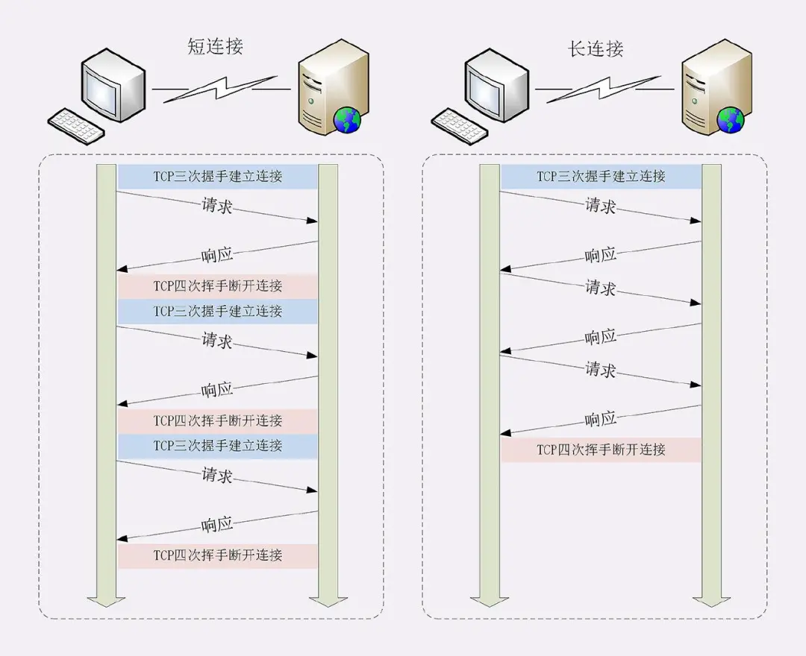
我们可以在请求头里明确要求使用长链接，指定 Connection: keep-alive 即可，在 HTTP 1.1 就算不指定也是默认开启的。如果服务器支持长链接，不管客户端是否显式要求长链接，它都会在返回头里带上 Connection: keep-alive，这样接下来双方就会使用长连接来收发报文，客户端如果想显式关闭关闭，只需要指定 Connection: Close 头字段即可。
长连接让传输效率大大提升，但新的问题又来了，因为 HTTP 规定报文必须一发一收，如果在要连接上发多个 HTTP 报文，多个报文会被累积到队列里依次处理（不能并行处理）只要队首的请求被阻塞了，后续 HTTP 的发送就受到影响，这就是有名的队头阻塞
 队头阻塞
队头阻塞
虽然 HTTP 1.1 提出了管线化机制，一次可以发送多个请求，但依然要等前一个请求的响应返回后才能处理下一个请求，所以这种机制聊胜于无。
我们再仔细想想，为啥会有队头阻塞这样的问题，本质上其实是因为我们没法区分每一个请求，再回顾一下我们上文的分层模型

以上是每一层发出的包，每个数据链接层的包（准确地说，链路层的包应该叫帧）规定的 IP 数据报的大小是有限制的，一般把这个大小限制称为最大传输单元（MTU, Maximum Transmission Unit）, TCP 数据报的大小也是有限制的，我们称之为 MSS（Maximum Transmission Unit）
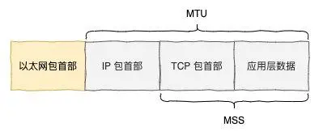
也就是说对于每一个最终发送的以太网包能传输的应用层数据是有限的，如果上层的应用层要发的数据大小超过了以太网包的大小，就需要对其进行拆分，分成几个以太网包再传输。
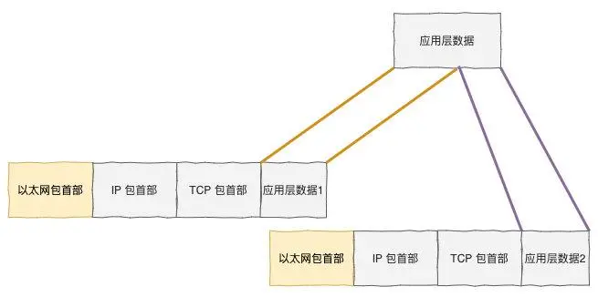
接收方拿到每个包的应用层数据再组装成应用层数据，然后一个请求才算接收完成，响应也是类似的原理。
这也是实体首部字段 Content-Length 存在的意义，接收方通过 Content-Length 就可以判断几个请求报文组合后大小是否达到这个设置值，如果是说明报文接收完毕，就可以对请求进行解析了，如果少于这个值，说明还需要接收请求包直到达到这个设定的值。
画外音，Content-Length 指的是实体消息首部，也就是在 POST，PUT 等方法中传输实体数据时才会出现，GET 请求不会出现
在底层，每个请求是复用同一个连接的，也就是说每个包发送都是串行的。
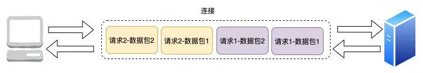
在 HTTP 1.1 中，没法区分每个数据包所属的请求，所以它规定每个请求只能串行处理，每个请求通过 Content-Length 判断接收完每个请求的数据包并处理后，才能再处理下一个请求，这样的话如果某个请求处理太慢就会影响后续请求的处理。
那么 HTTP 2.0 又是如何处理队头阻塞的呢，接下来我们就来揭开一下 HTTP 2.0 的面纱。
HTTP 2.0 概览
HTTP 2.0 在性能上实现了很大的飞跃，更难得的是它在改进的同时保持了语义的不变，与 HTTP 1.1 的语义完全相同！比如请求方法、URI、状态码、头字段等概念都保留不变，这样就消除了再学习的成本，在我们的日常软件升级中，向下兼容非常重要，也是促进产品大规模使用的一个前提，不然你一升级，各种接口之类的全换了，谁还敢升。 HTTP 2.0 只在语法上做了重要改进，完全变更了 HTTP 报文的传输格式
在语法上主要实现了以下改造
1、头部压缩
HTTP 1.1 考虑了 body 的压缩，但没有考虑 header 的压缩, 经常出现传了头部上百，上千字节，但 Body 却只有几十字节的情况，浪费了带宽，而且我们知道从 1.1 开始默认是长连接，几百上千个请求都用的这个连接，而请求的头部很多都是重复的，造成了带宽的极大浪费!想象一下面的这个请求，为了传输区区 「name=michale 」这几个字节，却要传输如此巨量的头部，浪费的带宽确实惊人。
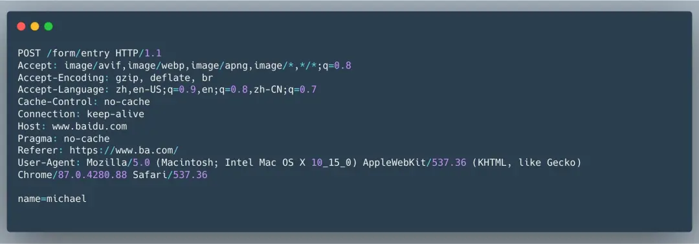
那么 HTTP 2.0 是如何解决的呢？它开发了专门的 「HPACK」算法，在客户端和服务器两端建立字典，用索引号表示重复的字符串，还采用哈夫曼编码来压缩数字和整数，可以达到最高达 90% 的压缩率
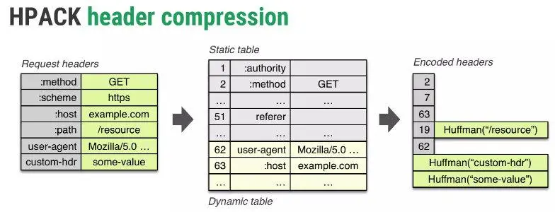
这里简单解释下，头部压缩需要在支持 HTTP 2.0 的客户端和服务器之间：
-
维护一份静态的字典（Static table），包含常见的头部名称，以及特别常见的头部名称与值的组合。这样的话如果请求响应命中了静态字典，直接发索引号即可
-
维护一份相同的动态字典（Dynamic table），可以动态地添加字典，这样的话如果客户端首次请求由于「User-Agent: xxx」,「host:xxx」,「Cookie」这些的动态键值对没有命中静态字典，还是会传给服务器，但服务器收到后会基于传过来的键值对创建动态字典条目，如上图的「User-Agent: xxx」对应数字 62，「host:xxx」对应数字 63，这样双方都创建动态条目后，之后就可以用只传 62，63 这样的索引号来通信了！显而易见，传输数据急遽降低，极大地提升了传输效率！需要注意的是动态字典是每个连接自己维护的，也就是对于每个连接而言，首次都必须发送动态键值对
-
支持基于静态哈夫曼码表的哈夫曼编码（Huffman Coding）：对于静态、动态字典中不存在的内容，可以使用哈夫曼编码来减小体积。HTTP/2 使用了一份静态哈夫曼码表（详见），也需要内置在客户端和服务端之中。
2、二进制格式
HTTP 1.1 是纯文本形式，而 2.0 是完全的二进制形式，它把 TCP 协议的部分特性挪到了应用层，把原来的 Header+Body 消息打散为了数个小版的二进制"帧"（Frame）,“HEADERS”帧存放头数据、“DATA”帧存放实体数据
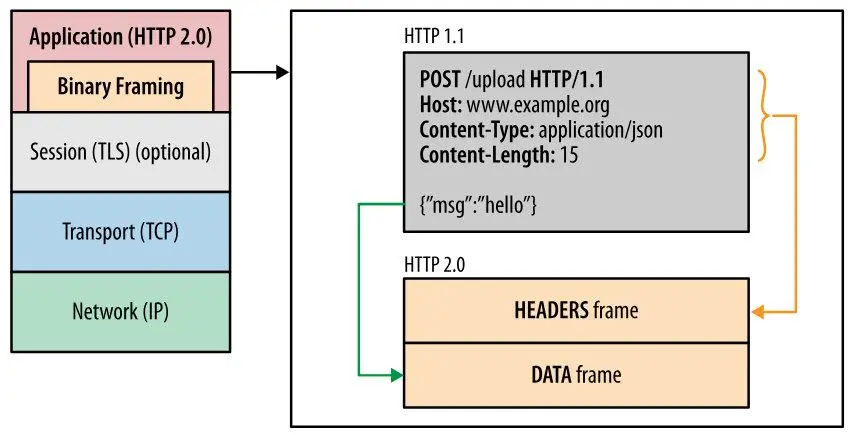 HTTP 2.0 二进制帧
这些二进制帧只认 0，1，基于这种考虑 http 2.0 的协议解析决定采用二进制格式，使用二进制的形式虽然对人不友好，但大大方便了计算机的解析，原来使用纯文本容易出现多义性，如大小写，空白字符等，程序在处理时必须用复杂的状态机，效率低，还麻烦。而使用二进制的话可以严格规定字段大小、顺序、标志位等格式，“对就是对，错就是错”，解析起来没有歧义，实现简单，而且体积小、速度快。
3. 流
HTTP 2 定义了「流」（stream）的的概念，它是二进制帧的双向传输序列，同一个消息往返的数据帧 （header 帧和 data 帧）会分配一个唯一的流 ID，这样我们就能区分每一个请求。在这个虚拟的流里，数据帧按先后次序传输，到达应答方后，将这些数据帧按它们的先后顺序组装起来，最后解析 HTTP 1.1 的请求头和实体。
在同一时间，请求方可以在流里发请求，应答方也可以也流里发响应，对比 HTTP 1.1 一个连接一次只能处理一次请求-应答，吞吐量大大提升
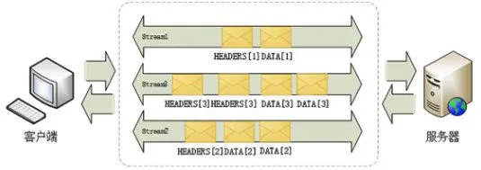
如图示，一个连接里多个流可以同时收发请求-应答数据帧，每个流中数据包按序传输组装
所有的流都是在同一个连接中流动的，这也是 HTTP 2.0 经典的多路复用（ Multiplexing），另外由于每个流都是独立的，所以谁先处理好请求，谁就可以先将响应通过连接发送给对方，也就解决了队头阻塞的问题。

如图示，在 HTTP 2 中，两个请求同时发送，可以同时接收，而在 HTTP 1.1 中必须等上一个请求响应后才能处理下一个请求
HTTP 2 的队头阻塞
HTTP 2 引入的流，帧等语法层面的改造确实让其传输效率有了质的飞跃，但是它依然存在着队头阻塞，这是咋回事？
其实主要是因为 HTTP 2 的分帧主要是在应用层处理的，而分帧最终还是要传给下层的 TCP 层经由它封装后再进行传输，每个连接最终还是顺序传输这些包，
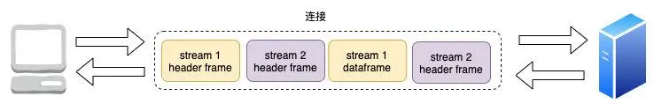
如图示：流只是我们虚拟出来的概念，最终在连接层面还是顺序传的
TCP 是可靠连接，为了保证这些包能顺序传给对方，会进行丢包重传机制，如果传了三个包，后两个包传成功，但第一个包传失败了，TCP 协议栈会把已收到的包暂存到缓存区中，停下等待第一个包的重传成功，这样的话在网络不佳的情况下只要一个包阻塞了，由于重传机制，后面的包就被阻塞了，上层应用由于拿不到包也只能干瞪眼了。
由于这是 TCP 协议层面的机制，无法改造，所以 HTTP 2 的队头阻塞是不可避免的。HTTP 3 对此进行了改进，将 TCP 换成了 UDP 来进行传输，由于 UDP 是无序的，不需要断建连，包之间没有依赖关系，所以从根本上解决了“队头阻塞”, 当然由于 UDP 本身的这些特性不足以支撑可靠的通信，所以 Google 在 UDP 的基础上也加了 TCP 的连接管理，拥塞窗口，流量控制等机制，这套协议我们称之为 QUIC 协议。
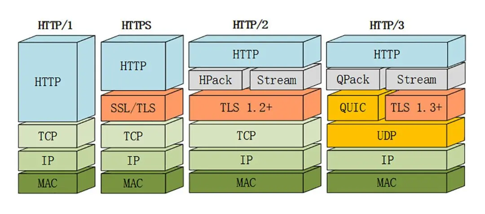 HTTP 1,2,3 三者对比
可以看到不管是 HTTP 2 还是 3 它们底层都支持用 TLS，保留了 HTTPS 安全的特性，这也可以理解，在互联网发展如此迅猛的今天，各大企业也越来越重视通信安全。
总结：HTTP 的特点
说了这么多 HTTP，接下来我们简单总结一下 HTTP 的特点
1、灵活可扩展
这可以说是 HTTP 最重要的特点，也是 HTTP 能大行其道并碾压其他协议称霸于世的根本原因！它只规定了报文的基本格式，用空格分隔单词，用换行分隔字段，「header+body」等基本语义，但在语法层面并不做限制，它并没有强制规定 header 里应该传什么，也没有限制它底层应该用什么传输，这也为 HTTPS 添加 SSL/TLS 层来加密传输，HTTP2 使用帧，流来进行多路复用，HTTP 3 使用 UDP 彻底解决解决队头阻塞问题提供了可能！后续如果又出现了牛逼的协议，底层也随时可以替换
2、可靠传输
不管底层是 TCP 还是 QUIC（底层使用 UDP），它们的传输都是可靠的，都能保证应用层请求响应的可靠传输，这一点很重要，不然传输过程中缺胳膊少腿，应用层就无法解析了。
3、应用层协议
HTTP 是一个协议，很多人把 HTTP 和 TCP 混在了一起， 就像前文所述，TCP 相当于高速公路，为我们提供了可靠的传输通道，HTTP 规定货物的表现形式（header + 空行+ body），货物是否可从中间站运回（缓存机制）高速公路是否应该关闭（连接控制），至于货物如何可靠传输到目的地，那是 TCP 的事，与 HTTP 无关，这一点也是不少人经常搞混的。
4、请求应答模式
HTTP 需要请求方发起请示，然后应答方对此作出响应，应答方不会无缘无故地发响应给请求方，另外请求和应答方的角色是可以互换的，比如 HTTP 2 中 server 是可以主动 push 给 client 的，这种情况下 server 即为请求方，cilent 即为应答方
5、无状态
HTTP 的每个请求-应答都是无关的，即每次的收发报文都是完全独立，没有任何联系的，服务器收到每个请求响应后，不会记录这个请求的任何信息，有人说不对啊，为啥我添加多次购物车，购物车列表还能保留我之前加过的商品呢？这就要简单地了解一下 Session 和 Cookie 了，Session 可以认为是 Server 用来追踪每个用户行为的一个会话，server 会给每个用户分配一个这个 Session 的 session，通过 Cookie 这个头字段返回给 client，之后 client 每次请求都会在 Cookie 里带上这个 sessionId，server 拿到 sessionId 之后就知道是哪个用户发起的了
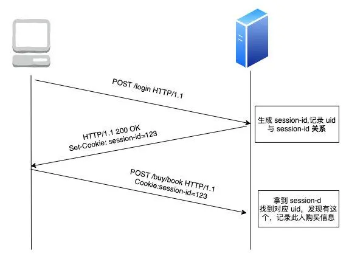
回答开篇问题
大部分问题已经隐藏在本文的知识点讲述中了，还有一些问题，我们一起来看下
1、为什么说反爬是个伪命题
因为不管是正常的客户端请求，还是爬虫请求，都要遵循 HTTP 协议，爬虫发的 HTTP 报文与正常用户请求没有本质区别，服务器无法区分，服务器只能通过一些 trick，如短时间内发现某个 ip 的请求特别频繁认定其为爬虫，直接拒绝服务，或者通过验证码的方式等提高爬虫的难度，但无法彻底杜绝，当然爬虫也有应对之道，它可以在请求的时候不停地更换自己的 ip 以达到欺骗 server 的目的，也可以破解验证码，爬虫和反爬也是在相爱相杀中不断提高破解与被破解的手段了。
2、301 与 302 有啥区别
这一点其实我在之前的高性能短链设计有提过，在短链设计中，重定向是一个必须要考虑的点 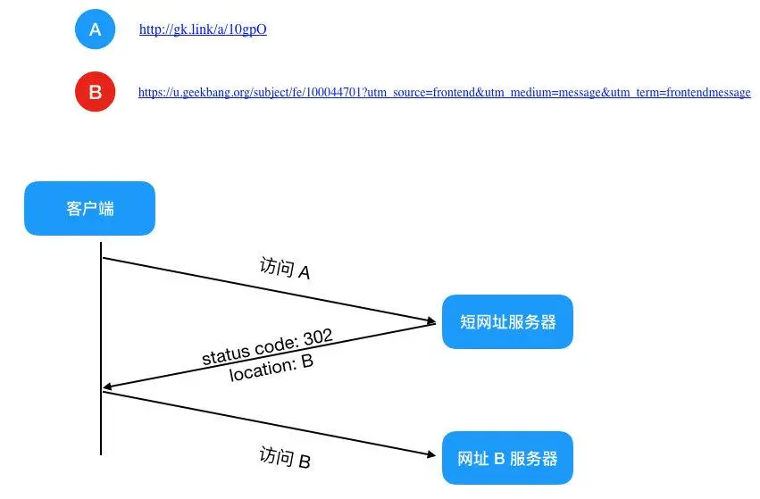
如图示，输入 A 网址后，会重定向到 B 网址，就需要考虑是用 301 还是 302，两者的区别如下
301：代表永久重定向，也就是说第一次请求拿到长链接后，下次浏览器再去请求短链的话，不会向短网址服务器请求了，而是直接从浏览器的缓存里拿，这样在 server 层面就无法获取到短网址的点击数了，如果这个链接刚好是某个活动的链接，也就无法分析此活动的效果。所以我们一般不采用 301。
302：代表临时重定向，也就是说每次去请求短链都会去请求短网址服务器（除非响应中用 Cache-Control 或 Expired 暗示浏览器缓存）,这样就便于 server 统计点击数，所以虽然用 302 会给 server 增加一点压力，但在数据异常重要的今天，这点代码是值得的，所以推荐使用 302！
3、HTTP 1.1 唯一一个要求请求头必传的字段是哪个，它有什么作用
是 Host, HTTP 1.1 允许一台服务器搭建多个 Web 站点，也就是说一台服务器可以托管多个域名对应的网站，这样的话必须指定 Host，到达服务器后才能找到对应的网址向其请求。

4. 老生常谈很多人的误解：GET 和 POST 的区别是啥
这个问题很多人都有误解，最常见的误解比如 POST 请求安全，GET参数通过 URL 传递，POST 放在请求体里等等，这些回答没有 GET 到点上，其实 GET，POST 都可以用来传输信息，GET 请求可以用 body 传输数据，在POST 请求时你可以不用不用 body 而用 url 传输数据，这都是可以实现的，这就好比你可以用救护车来运货，也可以用卡车来救人，都没有问题的，但这不符合人们的认知， 不符合 HTTP 对其定义的语义，无规矩不成方圆，遵循语义大家沟通才能更高效，所以其实它们的区别只在语义上有区别，至于安全，那是 HTTPS 的事了。
巨人的肩膀
- 极客时间-透视 HTTP 协议
- https://blog.konghy.cn/2019/08/06/dns-overview/
- https://aws.amazon.com/cn/route53/what-is-dns/
- https://developer.mozilla.org/en-US/docs/Web/HTTP
- HTTP 状态码：https://developer.mozilla.org/zh-CN/docs/Web/HTTP/Status
- http://entropymine.com/jason/testbed/mime/
- https://httpwg.org/specs/rfc7541.html#static.table.definition
- https://imququ.com/post/header-compression-in-http2.html
- https://developers.google.com/web/fundamentals/performance/http2